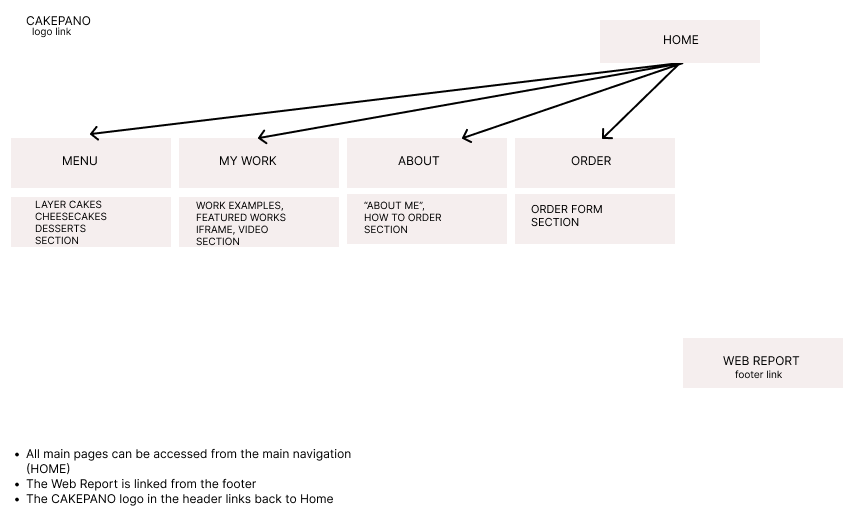

Web Report
To start with, the purpose of the project was to create a simple and responsive web design for CAKEPANO, a small home bakery. The main idea of the website is to provide customers with a place where they can see products, prices, previous work, ordering information and contact details. In fact, I wanted the website to look professional but keep the personal and handmade feeling of a small bakery.
I chose warm and neutral colours because they fit the style of the cake photos and create a calm and natural look. I wanted the website to be minimalistic and aesthetic with no heavy design involved. The main colour is light cream along with dark brown, which is used in the main text. These colours remind me of desserts and make the website look visually “tasty”. A warm brown colour is used for links and some sections. The font Georgia was primarily used throughout the website. In my opinion, it gives the website a more elegant look and matches perfectly with Arial, which is used for body text and navigation. The website is full of empty space as I wanted to keep the design clean and minimal.
The easiest part for me was creating the basic HTML structure and adding content such as text, images and links. After studying the W3Schools website, I found out that I could use “classes”, which are easier to address in the CSS file later.
CSS was more challenging. For example, I had problems with adjusting responsive layouts and making the same design work well on desktop, tablet and mobile. The iframe gallery and responsive images also required more time as I had not used them before. All the CSS took a lot of time, including additional studies and experiments. However, I enjoyed working with CSS and watching small things change into something bigger and beautiful.
The least interesting part for me was the validation and fixing small HTML and CSS problems.
In general, the project helped me to understand how HTML and CSS work together and how a website needs to be planned before it is built. I cannot tell the exact number of hours I have spent on this project, but it was a lot. Most of the time was spent on the design, CSS, responsive layouts and constantly fixing problems.
Site Map
Figure below shows the structure of the website and its main navigation paths.
